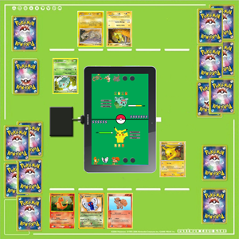

Pokemon Card Coliseum
Project Description

Team TableTop is developing Pokemon Card Coliseum, an interface between the traditional Pokemon Trading Card Game (TCG) mat and
a tablet PC via an RFID reader. The Pokemon Card Coliseum provides players with a unique way to play the traditional Pokemon TCG,
displaying real time animation based on game play using 2D graphics. The project engineers will design a Pokemon TCG mat with
integrated RFID reader to interface with an Android tablet, specifically a Samsung Galaxy 10.1 tablet for the prototype. During game
play, players will swipe Pokemon cards with RFID tags over the RFID reader and "into" the game, an Android application developed by
project engineers. This will allow the tablet to track and animate game play. The design prototype will include a limited set of
Pokemon cards to demonstrate game play. Five Pokemon, basic energy cards (Fighting, Fire, Grass, Lightning, Psychic, and Water), and
three trainer cards will be used. The major components include an Android Tablet with 30-pin input, a USB-to-30-pin-input adapter, a
USB-out RFID reader, and a standard Pokemon TCG mat containing spaces for: a bench, active Pokemon, prize cards, the player’s deck,
and a discard pile. The design team will demonstrate various aspects of play, showing the software cleanly handles varying aspects
of the card game and displaying relevant information to the user easily. The design of our GUI has been streamlined to include as few
buttons as possible, providing an immersive experience for users.
Team Members
From left to right, Nanley Chery (CmpE), Cameron Lewis (CmpE), Pratima (EE), Catherine Runyan (EE), Wes Swinson (CmpE).